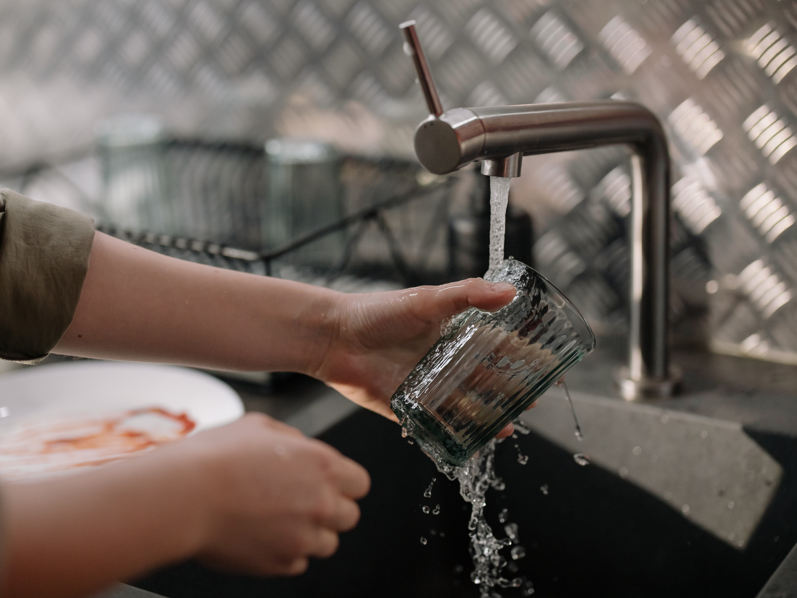
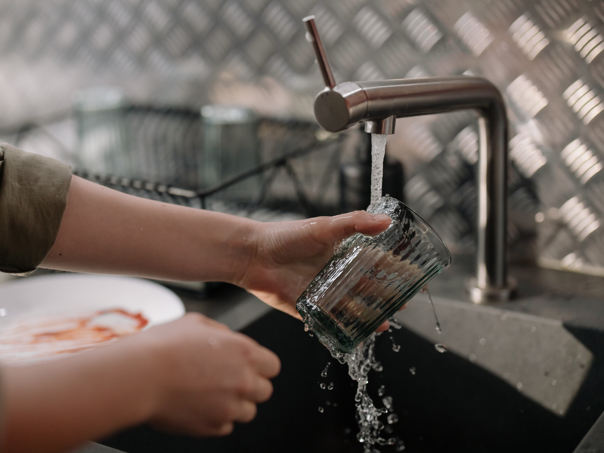
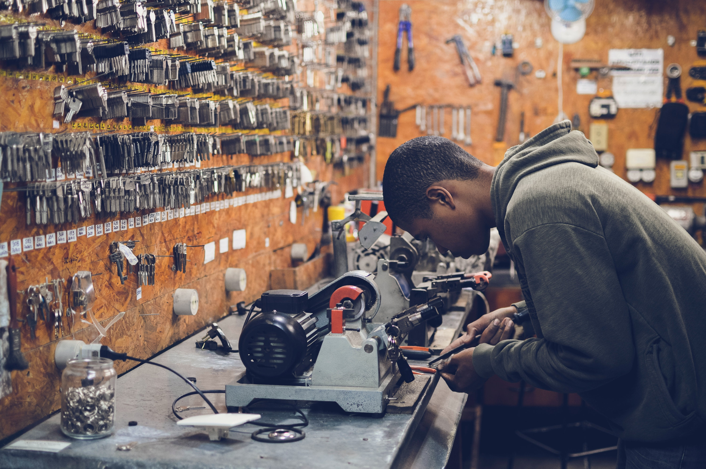
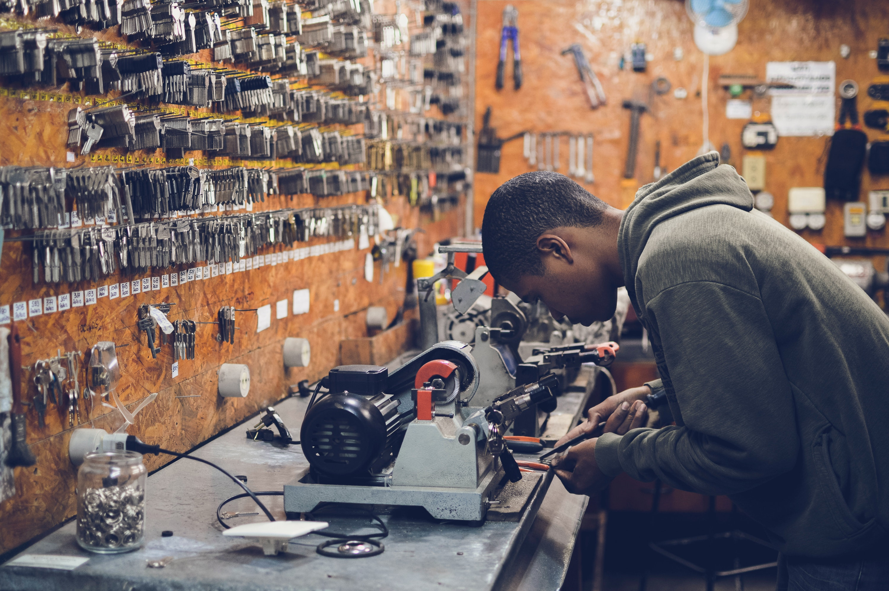

Know
About
Your
Track


 



 

If you are computer-savvy or a technological freak, step right into the ICT strand.
Agri-Fishery strand offers subjects that are included in the field productions.
the HE strand focuses on livelihood projects such as caregiving, cookery, and etc.
The Industrial Arts strand helps students develop their technical skills.